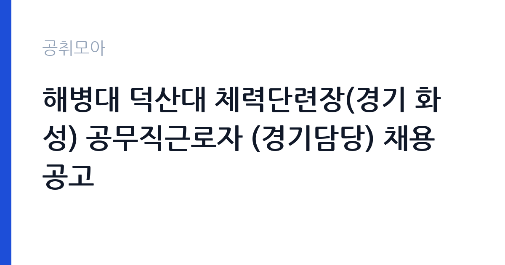

[국가기관] 해병대 덕산대 체력단련장(경기 화성) 공무직근로자 (경기담당) 채용 공고
국방부 국군조직 해군 해병대사령부 · 경기 · 마감 2026-11-13 (D-9) · 출처 나라일터

한눈에 보는 모집 조건
| 기관 | 국방부 국군조직 해군 해병대사령부 |
|---|---|
| 공고명 | 해병대 덕산대 체력단련장(경기 화성) 공무직근로자 (경기담당) 채용 공고 |
| 고용형태 | 공무직 |
| 근무지 | 경기 |
| 게시일 | 2026-11-04 |
| 마감일 | 2026-11-13 (D-9) |
지원자격, 이렇게 읽으세요
- 공무직근로자(경기담당) 1명
- 접수 ~2026-11-13 마감
- 세부 조건은 원문 공고문 확인
공무직 근로자는 공무원이 아니라 근로기준법이 적용되는 근로자이지만 기간의 정함이 없는 무기계약으로 채용되는 경우가 많아 정년까지 근무가 가능합니다. 채용은 공무원 시험과 달리 기관의 자체 전형으로 진행되고 인사 규정과 임금표를 적용받습니다. 이번 공고는 국방부 국군조직 해군 해병대사령부에서 직접 진행하는 자체 전형으로, 응시자격과 제출서류는 공고문에 항목별로 제시됩니다. 이 공고의 채용분야는 '경기담당 1명'이며 지원분야는 공무직근로자입니다. 다만 자격요건은 공고문에 별도로 정리되어 있어 원문의 붙임 파일을 확인해야 합니다. 공고문은 '우대사항은 응시조건(자격)이 아니다'라고 명시하고 있으므로, 우대 항목을 자격으로 착각해 지원하면 서류에서 걸릴 수 있습니다. 채용기간은 채용일로부터 정년까지로 적혀 있어 무기계약 신분에 해당합니다. 근무지는 경기 화성시 덕산대 체력단련장이고, 선발은 1차 서류심사와 2차 면접심사로 이뤄지며 합격자는 개별 연락으로 안내됩니다. 문의는 해병대사령부 복지정책과 복지시설운영담당에서 받습니다. 서류는 접수 마감 이후 보완이 되지 않으므로 자격 요건과 증빙 서류를 마감 전에 모두 갖춰야 합니다. 공고문에 명시된 우대 사항은 해당 여부를 확인해 증빙을 첨부해야 가점이 반영됩니다. 공고문의 응시자격 표를 보면 자격 항목이 여러 줄로 나뉘어 있으므로, 각 줄을 하나씩 체크하며 본인 해당 여부를 표시해 두면 누락을 줄일 수 있습니다. 이 공고 원문에 적힌 응시 조건 문구는 '우대사항은 응시조건(자격)이 아닙니다.'입니다. 문구를 그대로 읽고 본인 해당 여부를 하나씩 표시해 두면 서류 단계에서 탈락하는 일을 줄일 수 있습니다.
이 공고의 포인트
이 공고의 첫 번째 포인트는 고용 형태입니다. 무기계약으로 채용되면 정년까지 근무가 가능해 재계약 부담이 없습니다. 반대로 기간제로 채용되는 공고라면 계약 기간을 먼저 확인해야 합니다. 두 번째는 업무 범위가 명확하다는 점입니다. 체력단련장 경기 운영(골프) 직무로 채용되므로 배치 이후 담당 업무가 크게 흔들리지 않습니다. 세 번째는 근무지입니다. 경기 지역 근무로 접근성은 좋지만 그만큼 지원자가 몰리는 지역이므로 경쟁률을 넉넉히 잡아야 합니다. 처우와 근무 형태가 표로 정리되어 있어 비교해 보기에 편한 공고입니다. 다만 선발 인원이 1명으로 많지 않아 자격을 갖춘 지원자가 몰리면 경쟁률이 높아질 수 있습니다.
전형은 어떻게 진행되나
1차 서류, 2차 면접의 2단계로 진행되는 구성이 일반적입니다. 서류에서는 자격 요건과 경력 증빙을 확인하고, 면접에서는 실제 업무 수행 능력과 조직 적응을 봅니다. 직무에 따라 필기시험이나 실기, 컴퓨터 활용 시험이 추가되기도 하므로 공고문의 전형표를 먼저 확인하십시오. 단계별로 합격자만 다음 전형에 응시할 수 있고, 단계마다 응시 자격 확인 서류를 다시 제출해야 하는 경우가 있습니다. 최종합격자 발표 후에는 신원조회와 채용 신체검사가 남아 있습니다. 전형 일정이 공고문에 날짜로 명시되어 있으니 달력에 옮겨 두고 준비하십시오.
원문에서 확인한 전형 방식
덕산대 체력단련장(경기 화성시)에서 근무할 공무직근로자를 채용하고자 공고하오니, 많은 응시 바랍니다. ○ 채용분야 : 경기담당(1명) ○ 지원분야 : 공무직근로자 ○ 채용기간 : 채용일로부터 ~ 정년 ○ 선발방법 : 1차 서류심사, 2차 면접심사(합격자 개별연락) ○ 담당부서(연락처) : 복지정책과 / 복지시설운영담당 (010-2392-2235) ○ 채용분야 별 자격요건 확인 후 지원 바랍니다. * 우대사항은 응시조건(자격)이 아닙니다. ※ 자세한 사항은 첨부파일 참조해주시기 바랍니다.
이런 분께 추천해요
- 예약·접객 또는 스포츠시설 운영 경험이 있는 분
- 주말·새벽 근무 일정을 수용할 수 있는 분
- 공고문 자격요건을 직접 확인하고 지원할 수 있는 분
지원 전 체크리스트
- 응시자격 요건과 경력 기준을 충족하는가 — 경력은 증명서로 입증해야 합니다
- 무기계약 여부와 정년 기준을 공고문에서 확인했는가
- 제출서류 목록을 모두 준비했는가 — 누락 시 서류 단계에서 탈락합니다
- 접수 마감 2026-11-13 이전에 접수 방식을 확인해 제출했는가
모집 일정과 제출 타이밍
접수 마감은 2026-11-13이고 공고는 2026-11-04에 게시되었습니다. 준비 기간 9일 안에 서류 작성, 증빙 발급, 접수를 모두 마쳐야 하므로 주말을 포함해 일정을 미리 나누는 것이 좋습니다. 특히 경력 기술서나 직무수행계획서를 요구하는 공고는 작성에 시간이 걸리므로 첫날 초안을 잡으십시오. 서류 합격자 발표와 면접 사이 간격이 짧은 경우가 많아 면접 예상 질문은 서류 제출 전에 정리해 두는 편이 유리합니다. 마감 직전에는 접속이 몰리므로 여유를 두고 제출하십시오. 임용 예정일이 빠르게 잡히는 공고이므로 현재 일정과 겹치지 않는지 미리 확인하십시오. 경기 지역 근무지는 사업소나 시설이 외곽에 있는 경우가 많아 차량 통근 가능 여부를 확인해야 합니다. 마감까지 2주 안팎이 있어 준비할 시간은 있지만 미루면 촉박해집니다. 선발 인원이 한두 명 수준이라 지원자 개개인의 서류 완성도가 그대로 평가에 반영됩니다.
직무 이해하기: 국가기관
덕산대 체력단련장은 해병대사령부가 경기 화성에서 운영하는 군 체력단련시설로, 골프장과 부대 편의시설을 함께 운영합니다. 경기담당은 예약 접수와 내장객 확인, 티오프 순서 관리, 경기 진행 지원을 맡습니다. 이용객은 현역·예비역 군인과 가족, 일반 이용객이 섞여 있어 신분 확인과 이용 자격 확인 절차가 업무의 앞부분에 붙습니다. 카트와 장비 운영, 라커 및 시설 안내, 이용 요금 정산도 함께 처리합니다. 주말과 성수기에는 새벽부터 예약이 몰리므로 이른 출근이 필요하고, 우천이나 동절기에는 이용객 변동에 맞춰 일정이 조정됩니다. 업무 강도와 근무 시간대는 부서 배치에 따라 달라지므로 면접에서 확인하는 것이 가장 정확합니다.
자기소개서 작성 팁
지원서는 시설·여가 운영 경험을 응대와 운영관리 두 축으로 나눠 쓰는 것이 효과적입니다. 예약 관리나 고객 응대를 맡았던 경험, 인원과 시간을 통제한 경험을 수치와 함께 제시하십시오. 군 관련 시설에서 일하게 된다는 점을 이해하고 있다는 문단을 넣으면 준비도가 드러납니다. 정년까지 근무하는 자리라는 점을 감안해 장기 근무 의사를 분명히 밝히십시오. 문항별 글자 수 제한을 먼저 확인하고, 각 문항의 첫 문장에 결론을 배치하는 방식이 읽기 쉽습니다. 지원 동기는 기관의 어떤 사업에 기여하겠다는 한 문장으로 시작하고, 이어서 본인의 경험을 근거로 붙이십시오. 감점을 피하려면 다른 기관에 보낼 수 있는 범용 문장을 그대로 쓰지 않는 것이 중요합니다. 기관 이름과 사업명이 문장 안에 자연스럽게 들어가야 준비도가 드러납니다.
면접 준비 포인트
면접에서는 시설 운영과 응대 경험을 확인합니다. 예약이 겹쳤을 때 어떤 기준으로 순서를 정할지, 이용객이 자격이 맞지 않는다고 안내했을 때 어떻게 설득할지 묻습니다. 군 시설이라는 특성상 신분 확인과 보안 규정 준수 태도가 함께 평가됩니다. 경기 진행이나 스포츠시설 운영 경험이 있다면 구체적인 사례로 답하십시오. 주말·새벽 근무와 계절별 이용객 변동을 감당할 수 있는지도 확인 대상입니다. 답변은 상황, 판단, 조치의 순서로 정리하면 전달이 분명해집니다. 모르는 질문에는 모른다고 밝히고 확인 방법을 제시하는 편이 억지 답변보다 낫습니다. 마지막에는 근무 의사와 함께 2026-11-13 이후 일정에 언제든 응할 수 있다는 점을 전달하십시오. 면접은 공고문에 적힌 직무 내용을 얼마나 이해하고 있는지 확인하는 질문으로 시작하는 경우가 많으니, 모집분야 문구를 그대로 읽어 두는 것이 도움이 됩니다.
급여·근무조건 읽는 법
군 공무직근로자의 보수는 국방부 공무직 임금 기준과 경력 인정 결과에 따라 정해지며, 기본급에 정액급식비·명절휴가비·초과근무수당이 더해집니다. 이 공고는 채용일로부터 정년까지 근무하는 무기계약 형태로 적혀 있어 호봉이 오르면 임금이 조정됩니다. 구체적인 금액은 공고문 처우 항목과 붙임 자료에서 확인해야 하며, 확인되지 않은 금액은 이 글에서 제시하지 않습니다. 2026년 적용 최저임금은 시급 10,320원, 월 환산 2,156,880원(주 40시간·209시간 기준)입니다. 고용노동부 고시 제2025-47호로 확정된 금액입니다. 공고문에 금액이 제시되지 않은 항목은 원문 보수표나 처우 설명에서 확인해야 하며 확인되지 않은 수치는 쓰지 않는 것이 원칙입니다. 비교할 때는 월 급여뿐 아니라 상여·명절휴가비·복지포인트·초과근무수당까지 포함한 연간 총액으로 계산하십시오. 기간제라면 계약 기간 동안의 총액을, 무기계약이라면 호봉 상승과 정년까지의 누적 소득을 기준으로 판단하는 편이 정확합니다.
자주 묻는 질문
- 선발 인원은 몇 명인가요?
공고문 기준 1명입니다. 직종별로 인원이 나뉘는 경우가 있으니 모집분야 항목을 함께 확인하십시오. - 근무지는 어디인가요?
경기 지역의 국방부 국군조직 해군 해병대사령부 소속 근무지입니다. 세부 주소와 출퇴근 조건은 원문 공고문에서 확인할 수 있습니다. - 보수는 얼마인가요?
채용 신분(공무직)과 기관 임금 규정에 따라 정해지며 구체적인 금액은 공고문 처우 항목에 제시됩니다. 금액이 공개되지 않은 경우에는 원문의 보수표를 확인하십시오.
함께 보면 좋은 공고
[국가기관] 2026년 제7회 광양우체국 상시계약집배원 채용 공고 — 마감 2026-11-12[국가기관] 제8회 서천우체국 기간제 상시계약집배원(농어촌) 채용 재공고 — 마감 2026-11-12[국가기관] 국민통합위원회 기간제근로자 채용시험 응시자 제출서류 목록 수정 공고 — 마감 2026-11-09출처: 나라일터 공개정보를 바탕으로 공취모아가 정리한 안내글입니다. 모집 조건·일정은 변경될 수 있으니 지원 전 반드시 원문 공고문을 확인하세요. 본 글은 정보 제공용이며 합격을 보장하지 않습니다.